数控仿真简介
计算机数控仿真是应用计算机技术对数控加工操作过程进行模拟仿真的一门新技术。该技术面向实际生产过程的机床仿真操作，加工过程三维动态的逼真再现，能使每一个学生，对数控加工建立感性认识，可以反复动手进行数控加工操作，有效解决了因数控设备昂贵和有一定危险性，很难做到每位学生“一人一机”的问题，在培养全面熟练掌握数控加工技术的实用型技能人才方面发挥显著作用。
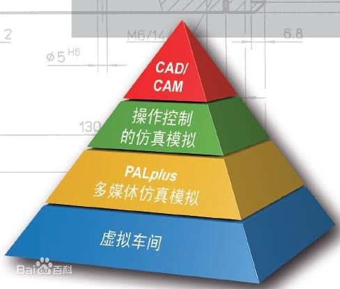
数控仿真加工通常按以下步骤进行：
- 针对加工对象进行工艺分析与设计。
- 按机床数控系统规定格式与代码编制NC程序并存盘。
- 打开仿真软件选择机床。
- 机床开机回参考点。
- 安装工件。
- 安装刀具。
- 建立工件坐标系。
- 编辑或上传NC语言。
- 校验程序。
- 自动加工。
VERICUT加工仿真
世界最强的数控模拟仿真，VERICUT是全世界NC验证软体的领导者；VERICUT软件是美国CGTECH公司开发的数控加工仿真系统，由NC程序验证模块、机床运动仿真模块、优化路径模块、多轴模块、高级机床特征模块、实体比较模块和CAD/CAM接口等模块组成，可仿真数控车床、铣床、加工中心、线切割机床和多轴机床等多种加工设备的数控加工过程，也能进行NC程序优化，缩短加工时间、延长刀具寿命、改进表面质量，检查过切、欠切，防止机床碰撞、超行程等错误;具有真实的三维实体显示效果，可以对切削模型进行尺寸测量，并能保存切削模型供检验、后续工序切削加工;具有CAD/CAM接口，能实现与UG.
CATIA及MasterCAM等软件的嵌套运行。VERICUT软件目前已广泛应用于航空航天、汽车、模具制造等行业，其最大特点是可仿真各种CNC系统，既能仿真刀位文件，又能仿真CAD/CAM后置处理的NC程序，其整个仿真过程包含程序验证、分析、机床仿真、优化和模型输出等。
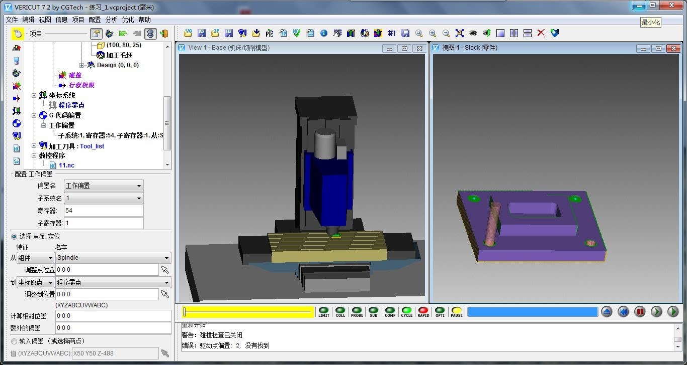
VERICUT是利用软件在计算机上虚拟制造过程，采用了先进的三维显示及虚拟现实技术，可以验证和检测NC程序可能存在的碰撞、干涉、过切、欠切、切削参数不合理等问题。
- Vericut是基于实体的、基于特征的并记录历史的仿真，所以通过Vericut生成的具有历史和特征的切削模型，可以方便、准确、快速地分析尺寸，检测错误。
- Vericut仿真是和实际生产完全匹配的，是对整个生产流程的模拟。一个零件的生产，从毛料到粗加工到半精加工再到精加工，切削模型可以在不同机床不同系统不同夹具中自动转移。
- Vericut 在程序模拟之前（预览程序），模拟过程中或模拟结束三个阶段都可以分析检测各种错误，包括：过切、碰撞、超程、旋转方向、极限切削参数（最大切削深度、最大切削宽度、最大切削速度、最大切削转速、最大材料去除率等）等。
- Vericut检查分析过切有曲面和实体两种方式，而且可以直接定位到特定程序特定程序行发生的过切，这样更方便更直观。
- 模型输出。VERICUT在模拟切削过程的任何阶段，都可以将具体加工特征（孔，槽，凸台，腹板，筋等）的切削模型输出，以不同的数据标准格式保存，如Step，IGS，ACIS，CATIA V5等格式。Vericut是基于特征的模拟，可以输出具有加工特征的模型供后续操作。
- Vericut可以产生丰富的工艺报告，如过程测量报告，结合具有特征的过程切削模型（其他模拟软件工具不具有的），分析测量，生成带有3D的图片的表格检测报告。
- Vericut有友好的配置指令界面窗口。用户可以根据自己机床的需求，方便地自由地配置机床和系统的高级功能（特殊的G代码和M代码）和特性。
- Vericut模拟精度高，性能稳定，速度稳定；Catia模拟性能不稳定，特别是在模拟复杂的大零件、五轴联动程序、切削毛料时。
- Vericut可以优化刀具长度，并可设定安全间隙距离。无论是三轴程序还是多轴程序，Vericut根据当前毛料几何，结合使用的夹具，刀具刀柄计算并优化刀具长度，会将短的刀具拉长，长的刀具缩短，最后以报告列表的形式将每一把刀具优化长度列出。
- Vericut可以优化进给速度，根据模拟生成过程切削模型，和所使用的刀具及每步走刀轨迹，计算每步程序的切削量，并在余量大程序行降低速度，余量小的高速度，进而修改程序，插入新的进给速度，最终创建更安全更高效的数控程序。
- Vericut可以模拟任何软件生成的程序（机床直接使用的G代码或刀轨APT程序），也可以模拟手写程序，并可以模拟实际机床和控制系统子程序，这样模拟就更加和实际加工统一了。
- Vericut可以模拟各种切削方式，除了一般的机械加工车、铣、镗、钻、磨外，还可以模拟拉削、插齿、滚齿，支持零件主轴与刀具主轴之间同时转动切削方式；还可以模拟机器人加工（钻铆），数控铆接等。
- Vericut模拟支持各种类型的刀具，包括成型刀或3D STEP模型刀具。而一般软件都不支持这关键的技术。
- Vericut模拟生产的切削模型可以被操作，如剖面，重新定位，输出STP模型格式后再进行修改等。
- CGTech（Vericut的产品供应商）是成熟的专业的数控加工仿真软件供应商，是数控加工仿真和程序优化领域的领导者。
可培训内容：
- VERICUT操作基础介绍
- VERICUT仿真流程
- VERICUT刀具库
- VERICUT定制机床模型与系统配置
- 构建VERICUT仿真环境
- 导入数控程序
- 自动比较
- 测量功能的使用
- 模型尺寸分析
- VERICUT仿真过程监控
- VERICUT加工仿真零件质量检测
- VERICUT与CAM软件接口应用
- VERICUT切削速度优化
- 创建工艺报表
本工作室基于Vericut环境已建立并且服务于企业的机床模型如下：
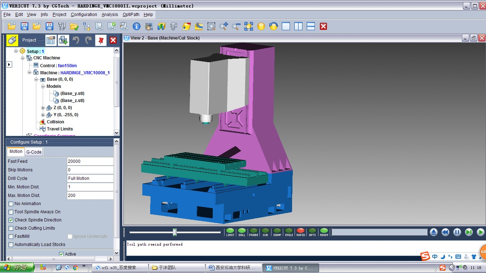
3-Axis 铣床: HARDINGE_VMC1000II
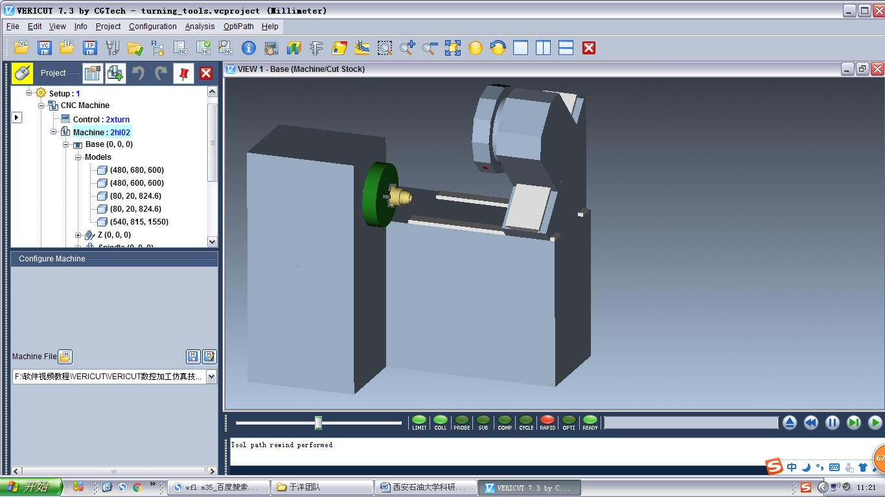
2轴车床
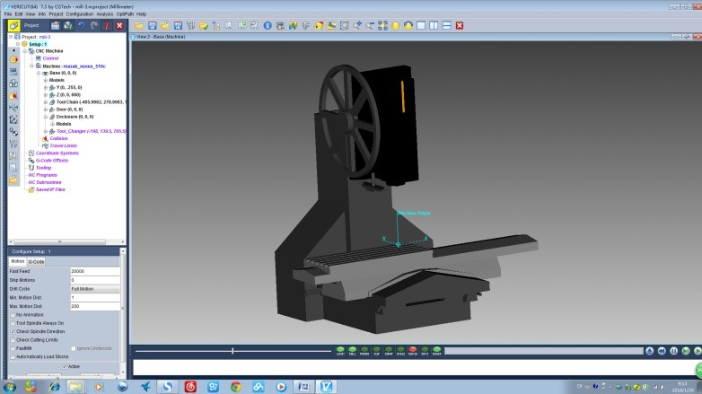
3-Axis铣床: MAZAK_nexus510a
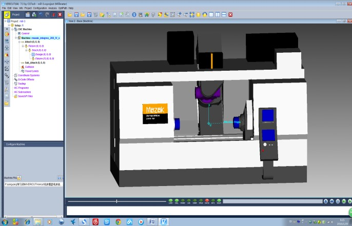
4-Axis 铣床: MAZAK_integrex_200_IV_s
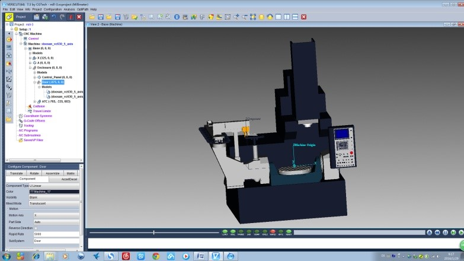
5-Axis 铣床: Doosan_vc630
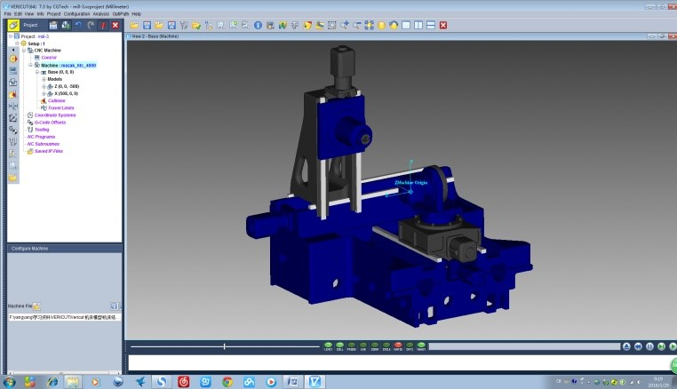
5-Axis 铣床: MAZAK_htc_4000
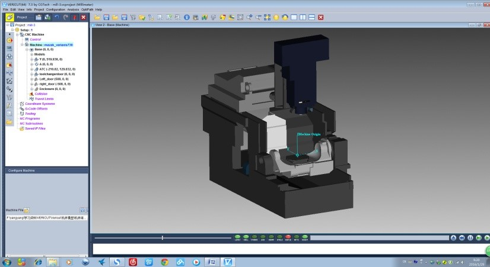
5-Axis铣床: MAZAK_variAxis730
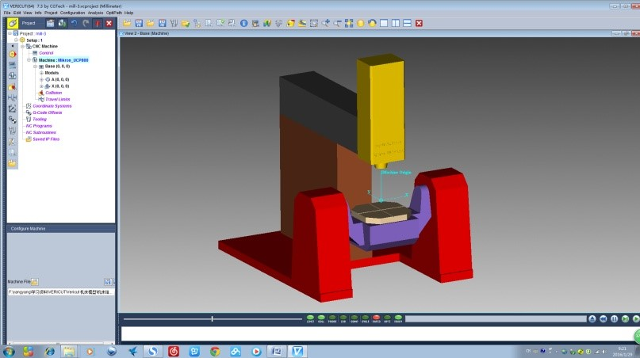
5-Axis 铣床:Mikron_UCP800
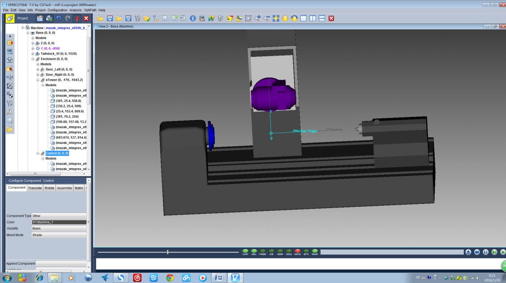
车铣复合机床：MAZAK_integrex_e650h_II_2000u
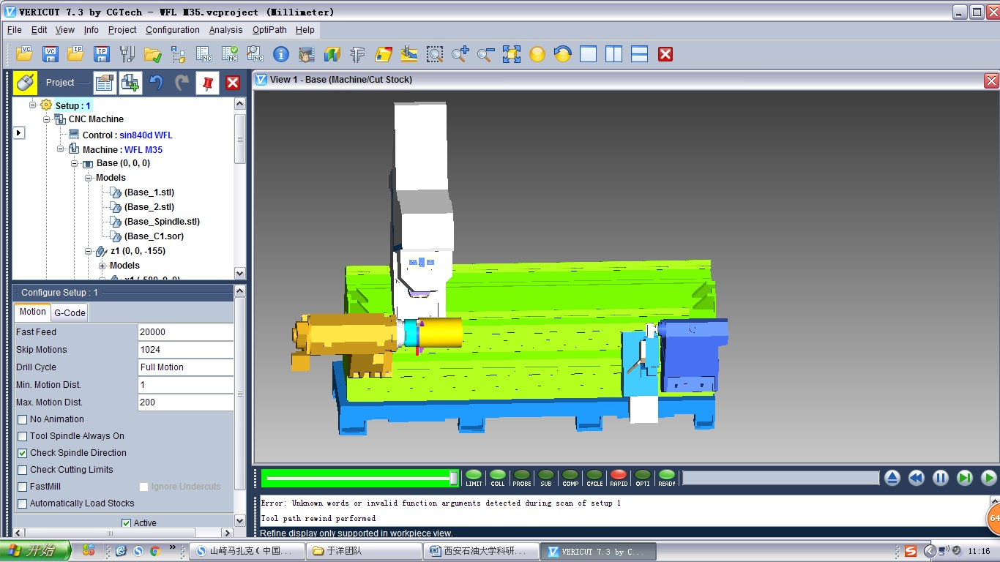
WFL的M35-G车铣复合加工中心
FANUC数控系统仿真
FANUC数控系统仿真软件真实感强，具有目前各种主流的数控系统和操作面板，效果逼真。用户可以在PC机上模拟操作机床，能在短时间内掌握各种系统的数控车、数控铣及加工中心等操作。软件同时具有手动编程和导入程序模拟加工。在斯沃数控仿真软件网络版中，服务器可随时获取客户端操作信息，并具有考试、练习以及广播功能等。
软件操作面板和真实机床一样，如下图所示：
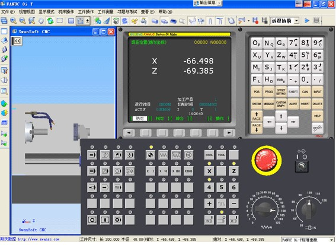
BEIJING-FANUC Series 0i Mate-TB
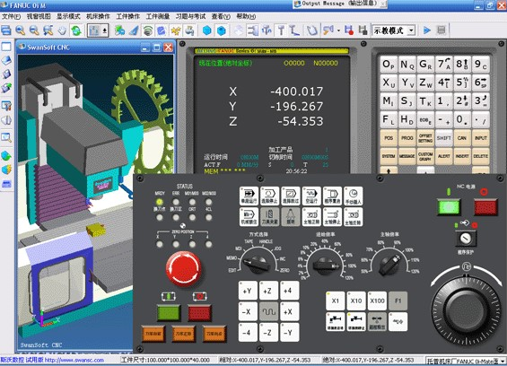
BEIJING-FANUC Series 0i Mate-MB
可培训内容：
- FANUC 0iT，FANUC 0iMD
- FANUC 0TD，FANUC 0iM
- FANUC 18iT，FANUC 18iM
- FANUC 18T，FANUC 18M
- FANUC 21iT，FANUC 21iM
SIEMENS数控系统仿真
SIEMENS数控系统仿真软件真实感强，具有目前各种主流的数控系统和操作面板，效果逼真。用户可以在PC机上模拟操作机床，能在短时间内掌握各种系统的数控车、数控铣及加工中心等操作。软件同时具有手动编程和导入程序模拟加工。在斯沃数控仿真软件网络版中，服务器可随时获取客户端操作信息，并具有考试、练习以及广播功能等。
软件操作面板和真实机床一样，如下图所示：
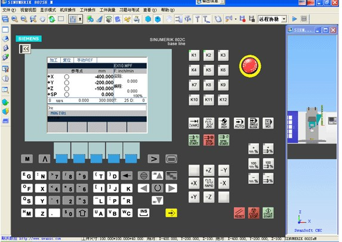
SINUMERIK802SeM
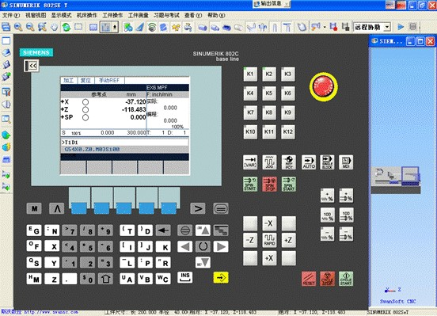
SINUMERIK802SeT
可培训内容：
- SINUMERIK802SeM，SINUMERIK802SeT
- SINUMERIK802S/C M，SINUMERIK802S/C T
- SINUMERIK802DM，SINUMERIK802DT
- SINUMERIK810D/840DM，SINUMERIK810D/840DT
- SINUMERIK801
- SINUMERIK828D M，SINUMERIK828D T
- SINUMERIK808D M，SINUMERIK808D T